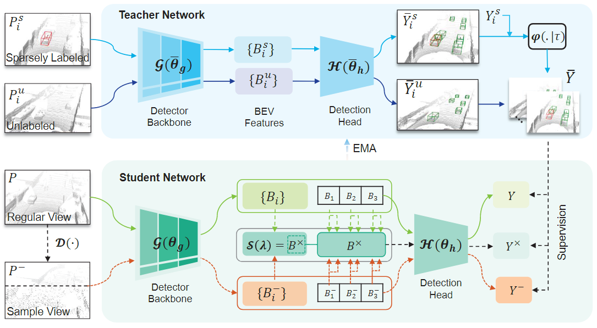
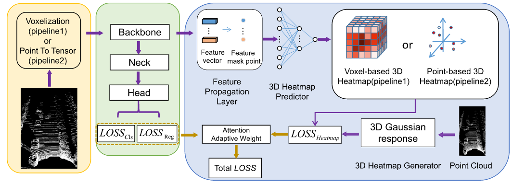
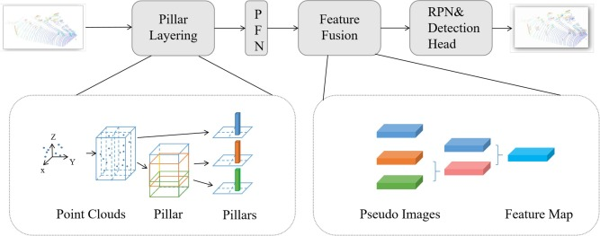

|
Ph.D. student at Xiamen University |
[Biography] [Latest News] [Publications] [Professional Activities] [Major Awards]
Biography [back top]
I am currently pursuing the Ph.D. degree with the School of Informatics, Xiamen University, Xiamen, China. My research interests focus on computer vision and machine learning, particularly in exploring machine learning for autonomous systems. This includes 3D scene understanding, object detection, and other topics related to autonomous driving.
Latest News [back top]
- 02/2025: DoTA(First Author), SP3D(Co-First Author) and V2X-R are accepted by CVPR 2025
- 12/2024: Three paper is accepted by AAAI 2025
- 07/2024: One paper is accepted by ECCV 2024
- 02/2024: HINTED(First Author) is accepted by CVPR 2024
- 08/2023: CoIn(First Author) is accepted by ICCV 2023
- 02/2023: 3D HANET(First Author) is accepted by TGRS
Publications [back top]
Conference
 |
Qiming xia, Wenkai Lin, Haoen Xiang, Xun Huang, Siheng Chen, Zhen Dong, Cheng Wang, Chenglu Wen✉, Cheng Wang
Learning to Detect Objects from Multi-Agent LiDAR Scans without Manual Labels ECCV, 2024 |
 |
Shijia Zhao*, Qiming xia*, Wenkai Lin, Haoen Xiang, Xun Huang, Siheng Chen, Zhen Dong, Cheng Wang, Chenglu Wen✉, Cheng Wang
SP3D: Boosting Sparsely-Supervised 3D Object Detection via Accurate Cross-Modal Semantic Prompts ECCV, 2024 |
|  | Qiming xia, Wei Ye, Hai Wu, Shijia Zhao, Leyuan Xin, Xun Huang, Jinhao Deng, Xin Li, Chenglu Wen✉, Cheng Wang
HINTED: Hard Instance Enhanced Detector with Mixed-Density Feature Fusion for Sparsely-Supervised 3D Object Detection CVPR, 2024 [paper] [code] |
 |
Qiming xia, Jinhao Deng, Chenglu Wen✉, Hai Wu, Shaoshuai Shi, Xin Li, Cheng Wang
CoIn: Contrastive instance feature mining for outdoor 3d object detection with very limited annotations ICCV, 2023 [paper] [code] |
Journal
|  | Qiming Xia, Yidong Chen, Guorong Cai✉, Guikun Chen, Daoshun Xie, Jinhe Su, Zongyue Wang✉
3-D HANet: A flexible 3-D heatmap auxiliary network for object detection IEEE Transactions on Geoscience and Remote Sensing (IEEE TGRS) [paper] [code] |
|  | Zongyue Wang, Qiming Xia, Jing Du, Shangfeng Huang, Jinhe Su, José Marcato Junior, Jonathan Li, Guorong Cai✉
3D MSSD: A multilayer spatial structure 3D object detection network for mobile LiDAR point clouds International Journal of Applied Earth Observation and Geoinformation (JAG) |
Professional Activities [back top]
Reviewer:
- Conference and Workshop on Neural Information Processing Systems (NeurIPS)
- The International Conference on Learning Representations (ICLR)
- International Conference on Machine Learning(ICML)
- Conference on Computer Vision and Pattern Recognition(CVPR)
- International Conference on Computer Vision (ICCV)
- IEEE Transactions on Geoscience and Remote Sensing (TGRS)
- IEEE Transactions on Intelligent Transportation Systems (TITS)
Major Awards [back top]
- National Scholarship, China, 2020
|
不以物喜，不以己悲。
Do not rejoice in external gains, nor be saddened by personal losses. |